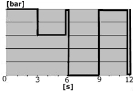

This test is used to determine whether the solenoid valves function correctly and to check that the air lines are correctly installed.
Note:
The test should not be stopped during the cycle.
Test prerequisites:
Parking brake released.
Brake pedal completely depressed.
Engine speed 1000 rpm or constant air supply to the air system.
Procedure:
Parking brake released.
Depress brake pedal completely.
Connect a pressure sensor calibrated for at least 12 bar to the output on the solenoid valve.
Activate the test for the relevant solenoid valve and read the pressure value. The pressure must correspond to the pressure graph curve, see picture below.

When the test is complete, end the diagnostic session. Turn ignition key to stop position and then back to driving position.